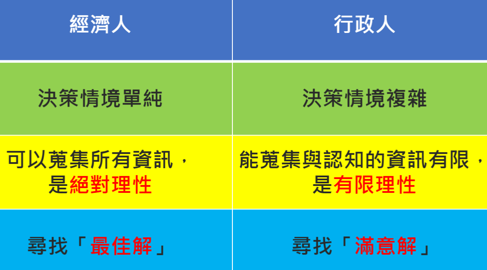

Management
第四章-從變動的環境中開創新契機
- 總體環境
- 總體環境是指一般性的、不限特定企業的環境因素
- 科技環境
- 科技是指應用在商品或服務的生產、配銷過程中的技術與設備。
- 科技變遷對企業的影響
- 縮短產品生命週期
- 摩爾定律、數位相機的生命週期、網路攝影機的技術進步
- 創造新的經營形式
- 通訊科技(B2C)
- 供應鏈
- 提升企業效率
- 流程再造、降低成本
- 科技進步
- 縮短產品生命週期
- 社會文化環境
- 文化包含一切知識、宗教、藝術、法律、道德對企業而言，社會文化的影響是多面向的
- 社會文化的影響
- 企業面對的消費者無法自外於社會文化的影響
- 企業由人組成，管理者執行任務時必須面對不同文化或價值觀的人力
- 縱斷面的差異-與時變遷的文化
- 同一個社會的文化或價值觀會隨著時間而發生變化。
- 價值觀的改變對企業的影響是多元的，可能帶來新的商機，相對的，也可能使既有的產品失去認同。
- 橫斷面的差異-多元並陳的次文化
- 近年來，社會愈來愈接受次文化多元並陳的現象。
- 對企業而言，可以設法區隔特定的族群來提供商品服務，愈來愈常見到產品的行銷訴求會針對次文化團體來進行
- 人口統計變數
- 人口統計變數是指人口的分佈、人口密度、年齡與教育程度等人口特徵
- 彼得杜拉克：「目前的人口組合乃是構成未來勞動力及顧客的基礎，因此，任何策略一定要先考慮到人口結構的變化。」
- 經濟環境
- 對企業的影響
- 經濟前景看好 → 消費者勇於消費
- 經濟前景看壞 → 消費意願低落
- 經濟指標
- 景氣對策信號
- 主要目的在藉燈號以提示應採的景氣對策，並綜合判斷短期未來的景氣是否將進入過熱或衰退，而預先發出信號。
- 信號種類
- 「紅燈」表示景氣過熱(應剎車)
- 「黃紅燈」表示景氣活絡(應注意)
- 「綠燈」表示景氣穩定(安全狀況)
- 「黃藍燈」表示景氣欠佳(應注意)
- 「藍燈」表示景氣衰退(應加速)
- 領先指標
- 可用來預測短期未來景氣變化。
- 目前編製領先指標綜合指數係選定七項領先景氣變動經濟指標加權估算而成：
- 製造業平均每月工時
- 製造業新接訂單指數變動率
- 海關出口值變動率
- 股價指數變動率
- 躉售物價指數變動率
- 貨幣供給M1B變動率
- 台灣地區房屋建築申請面積等
- 同時指標
- 應經濟活動中能即時反應的六項因素
- 工業生產指數變動率
- 製造業生產指數變動率
- 製造業銷售值
- 製造業平均每人每月薪資變動率
- 票據交換金額變動率
- 國內貨運量
- 配合景氣對策信號，可驗證景氣的脈動
- 應經濟活動中能即時反應的六項因素
- 失業率
- 年滿15歲以上，扣除就學、監管、服役等非就業人口與勞動力的比值。
- 失業者
- 年滿15歲
- 無工作
- 隨時可工作
- 正在尋找工作或已找工作，正等待結果
- 通貨膨脹率
- 一般物價水準在某一時期內，連續性的以相當的幅度上升
- 行政院主計處
- 消費者物價指數(CPI)
- 躉售物價指數(WPI)
- 景氣對策信號
- 對企業的影響
- 法律與政策環境
- 法律規範了企業的行為，法律產生變動時，就可能是產業界鉅變的開端。
- 除了法律以外，政府擬定的財政、貨幣與產業政策，會對總體經濟產生各種不同的效果，進而影響企業的經營。
- 2011.6.28開放陸客自由行
- 任務環境
- 與組織活動有直接關係的任務環境
- 顧客
- 顧客是向組織購買商品或獲得服務的人們
- 決定組織能否生存的關鍵因素
- 企業必須不斷推陳出新，滿足顧客多變的需求
- 競爭者
- 競爭者就是在是同一產業或同一型態的公司中，提供消費者相同的商品或服務。
- 競爭的型態又分成：
- 直接競爭
- 指提供類似產品或服務的廠商。
- 根據競爭的狀態區分為：
- 完全競爭：競爭者的家數眾多，提供的產品近乎同質
- 獨佔性競爭：廠商數多，不過產品差異化
- 寡佔：廠商數目少，生產與定價決策會互相牽制
- 獨佔：產業內僅有單一個廠商，沒有近似的替代品
- 間接競爭
- 指廠商雖然提供不同的產品，但卻針對相同的顧客，因此會有爭奪顧客的現象出現。
- 直接競爭
- 供應商
- 供應商所提供的是企業生產所需的原物料。
- 對企業的影響可透過生產成本及產品品質兩種管道
- 近年來由於中心衛星工廠生產體系的盛行，許多企業都大幅降低供應商的數目。
- 人力資源市場
- 指在外部環境中的勞動力，他們是企業人力供應的來源。
- 當前台灣的受到下列兩個因素的衝擊：
- 勞動供給減少
- 企業應考量更有彈性的工作方式
- 知識生命週期縮短
- 企業應考如何加強人力培訓與教育
- 勞動供給減少
- 全球化
- 指全球經濟體系的形成。企業家在世界各地籌集資金，利用世界各地的科技、通訊、管理及人力，在世界各地製造產品，賣給世界任何地方的顧客。
- 市場的全球化
- 財貨與服務的流通可以跨越國家彊界，而將全球視為一個巨大的市場。
- 金融的全球化
- 國際資金移動中，百分之90以上與貿易無關
- 跨國金融活動的重要性隨著金融全球化而愈來愈高
- 歸功於資訊及通信科技的進步，使跨國交易或複雜之交易計算得以簡化。
- 跨國交易限制之解除，才排除了跨國交易的根本阻礙
- 台灣企業海外籌資的例子愈來愈多
- 金融海嘯與歐債危機
- 亞洲金融風暴、金融大海嘯
- 1997年的亞洲金融風暴，起源於泰國，波及到馬來西亞、新加坡、印尼及菲律賓，而後經過香港達到南韓。這些國家或地區幣值劇貶的結果不僅是外匯存底急速流失，同時還使得國內金融市場極不穩定。
- 為何亞洲國家會出現金融風暴？即是先前外資流進太多，造成日後外資同時撤出，以致於對匯市及股市產生強烈衝擊。
- 製造的全球化
- 企業在全球各個地點取得製造過程所需之財貨與服務，以完成部分或全部的生產程序。
- 例如：製造業的龍頭鴻海集團，在中國的廣東深圳和江蘇昆山、歐洲的捷克及美國都有生產基地，目前還計畫在中南美洲的巴西增設據點。
- 又如美國波音公司製造的波音777客機所需要的13萬個零件，是由分布在全球545個供應商提供，包括台灣、日本、新加坡、義大利。
- 企業在全球各個地點取得製造過程所需之財貨與服務，以完成部分或全部的生產程序。
- 台灣在製造全球化中的角色
- 國際大廠代工廠(OEM)
- 資訊產品的第三大生產國(次於美、日)
- 台灣接單、大陸生產
- 1980年代之後，生產基地轉移到中國大陸等地區
- 製造業國外生產比例逐年增高
- 人力資源的全球化
- 勞動力的跨界移動，也就是人力的遷徙以競逐工作機會。
- 美國矽谷的高階主管，多來自印度或中國
- 藝術家、設計師、表演家、運動明星同樣不受國界限制
- 勞動機會的跨界移動，也就是工作機會的全球移動
- 全球化造成開發中國家工作機會喪失與失業率增加的原因：
- 跨國公司基於全球布局的考量，將已開發國家的工作機會，輸出到部分開發中國家
- 貿易自由化使得國外產品取代國內產品，國內產品的生產減少或消失
- 採用新科技，降低勞動使用與對勞動力的依賴。
- 未來趨勢
- 高盛集團認為未來10年，美國將有600萬工作機會外流到印度、愛爾蘭、以色列，或者其他勞動成本低、科技人才素質高的國家
- 全球化造成開發中國家工作機會喪失與失業率增加的原因：
- 勞動力的跨界移動，也就是人力的遷徙以競逐工作機會。
- 全球市場的進入模式
- 出口模式、授權、加盟、策略聯盟、合資、獨資經營
- 組織與環境的互動機制
- 組織的被動適應機制
- 跨界角色
- 幫助組織連結與協調關鍵的外部不確定來源的單位
- 其目的有二：
- 發現並處理環境中變動的資訊
- 表達企業對該環境要素的興趣
- 強化規劃與預測能力
- 會運用預測及規劃活動來因應環境變化
- 發展彈性結構
- 有機式組織(organic structure)
- 有許多工作團隊來研發新產品、處理政府的法令政策變動、推動新產品上市等，在變動劇烈環境中有較佳的。
- 機械性組織(machine structure)
- 視組織為整合性、條理化，以及高度官僚化的機器在運作的精密結構。
- 有機式組織(organic structure)
- 合併、購併與合資
- 企業購併，也是一個降低環境不確定性的方
- 跨界角色
- 組織的主動影響機制
- 廣告及公共關係
- 企業主動影響利害關係人在心目中對企業的定位與印象。
- 廣告
- 主要是針對消費者推廣產品，影響消費者喜好。
- 公共關係
- 非單只針對消費者，而是試圖影響所有與企業有關的人、事、物。
- 標竿企業聲望。
- 媒體報導。
- 政策性活動
- 又稱為遊說(lobbying)
- 組織企圖去影響政府的法令及政策
- 企業領導者：王永慶、張忠謀、郭台銘、施振榮、
- 遊說的限制
- 台灣2007年通過遊說法
- 不得對國防、外交、大陸事務進行遊說
- 商會
- 目的在於結合業務類似的企業，來影響經營環境，包括政府的法律及規定。
- 台灣六大工商團體
- 工商協進會、全國工總、全國商總、中小企業協會、工業協進會、電機電子工會
- 每年的新聞：新春團拜
- 廣告及公共關係
- 組織的被動適應機制
第五章-企業倫理與社會責任的實踐
- 當代企業所面臨的倫理議題
- 倫理：社會對行為對錯的道德判斷
- 企業倫理：企業行為處世的對錯信念，或遵循的道德原則與標準
- 倫理的兩難
- 意指在不同的道德選擇之下，面對可能的利益衝突，而產生難以抉擇的困難。
- 管理者決策時的考量
- 成本、消費者、環境保護...等多重議題。
- 功利主義原則
- 主張企業以提供最多數人的最大效用為道德原則
- 管理者衡量不同關係人之間的利害關係，決定一個可以為最多數人提供效用的方案。
- 功利主義原則的問題
- 以結果為重，可能會將有損他人權益的過程合理化
- 決策者在現實生活中，並無法取得決策所需的所有資訊，加上許多行為的成本與利益難以計算，功利主義原則使用起來並不容易。
- 基本權利原則
- 強調每個人的權力與自由的重要性
- 企業的決策必須基於對基本道德權利的考量
- 自由
- 生命安全
- 私有財產
- 個人隱私
- 言論自由
- 一個方案即便對多數人有好處，只要會危害到任何人的基本權利，就不應該採取。
- 基本權利原則的問題
- 個人權利與社會福祉的衝突
- 公平正義原則
- 將可能的好處與壞處，依公平正義的程序分配給所有人
- 分配正義
- 例如：獎勵員工績效，是根據員工的付出與績效，不受種族或性別等因素的影響。
- 程序正義
- 例如：員工的升遷，是根據一套事先設定規則與標準。5.1 當代企業所面臨的倫理問題
- 公平正義原則的問題
- 齊頭式的平等，將降低個人的冒險精神
- 國營事業，依據年資升遷，降低新進員工積極進取的意願
- 公平正義僅考慮客觀數字的平等，卻忽略主觀的感受。
- 齊頭式的平等，將降低個人的冒險精神
- 均衡務實原則
- 企業在處理道德議題時，同時考量決策的效用及後果，對個人權益的影響，以及是否符合公平正義，以補足各自不足的地方。
- 決策者自問：「如果我是受影響的一方，當別人做出這樣的決定，我會有什麼樣的反應？」
- 衡務實原則只是一個門檻，透過不斷的試誤，管理者從中得到教訓，可以讓下個決策更好，更周到。
- 倫理與法律
- 法律是企業遵循原則的最低的底限
- 法律對員工設定最低工資保障
- 符合法律，不一定就符合倫理要求
- 法律的制定的調整落後於倫理
- 法律或有未全之處
- 當法律未全之時，企業的倫理行為
- 社會觀感
- 自發行為
- 法律是企業遵循原則的最低的底限
- 企業的利害關係人
- 利害關係人是指：在企業內外，受企業活動影響其利害的個人或團體
- 根據與企業關係的遠近，分為：
- 主要利害關係人
- 投資者
- 一般投資人
- 例如股市中的股民
- 創業投資人
- 指將資金投資於具有高成長潛力，以獲得其部分所有權的企業、小型集團，或者退休基金
- 天使投資人
- 擁有雄厚資金作為投資工具的個人，以現金換取公司相對等值的所有權
- 企業對投資者的責任
- 投資者在投資企業時，承擔極大風險
- 企業應盡的責任
- 在經濟上給予回饋，讓投資者獲得適當報酬
- 企業必須誠實、負責任，才能確保投資人的心血不會白流
- 一般投資人
- 消費者
- 是購買企業提供的產品與服務，使企業獲得生存所需的收入與利潤的人。
- 顧客導向
- 企業應該了解顧客的欲望與需求，並且設計能夠滿足這些需求與欲望的產品或服務。
- 企業對消費者的責任
- 安全
- 消費者在正常使用產品的狀況下，可以安心不受損害。
- 溝通
- 主動告知消費者有關產品或服務的實際狀況，並對消費者的疑問提出回應
- 選擇
- 企業必須保障消費者有多類的產品與服務，在具有競爭力的價格下選擇。
- 尊重
- 消費者必須獲得企業的尊重及申訴的權利。
- 以客為尊，尊重消費者並提供良好的服務。
- 安全
- 員工
- 指在企業內工作的勞動人力
- 員工對企業的期望
- 一份有意義的工作
- 獲得與付出或績效相當的報酬
- 能在企業內安身立命，並圓滿的完成工作
- 企業對員工的責任
- 提供一個安全的工作環境
- 合理的薪資架構及升遷管道
- 儘量讓工作有意義
- 投資於員工訓練與發展
- 投資者
- 次要利害關係人
- 工會
- 工會是一種組織，透過這個組織，員工可以表達對薪資、工時、以及工作條件等議題的意見給管理者
- 歐美地區的工會力量很大
- 台灣工會力量並不大
- 政府機構
- 政府政策會對企業營運造成很大影響
- 環保政策 vs. 限制重汙染產業
- 大型企業或產業工會，會對政府機構進行遊說，影響政策走向
- 政府政策會對企業營運造成很大影響
- 社會大眾
- 企業也是社會的一員，社會大眾對企業的期許，期望企業扮演好社會公民的角色
- 因此，企業必須對社會表現出尊重，並予以回饋，做出有利於社會大眾的行為。
- 取之於社會，用之於社會
- 工會
- 主要利害關係人
- 經濟責任
- 企業必須提供具有價值的商品與服務給顧客
- 提供利潤報酬給所有權人與股東
- 提供薪資報酬給員工
- 彼得杜拉克：「一個在經濟環境中逐漸沒落的企業，不可能是個好鄰居、好雇主，或者對社會盡責任。」
- 法律責任
- 企業必須在法令規章的規範之下營運
- 合法的行為是最低的道德標準，不違法不等於合宜
- 法律並非靜止，企業必須與時俱進
- 全球化時代，企業要注意國外法規的變化
- 網路普及後，著作權法也成為企業法律上的新課題
- 道德責任
- 指企業符合社會期望，做出符合社會基本價值的行為。
- 盡到超乎法律規定以外的責任，做出符合倫理、對的事情。
- 3C產業的資源回收計畫
- 自由意志責任
- 指企業在經濟、法律，以及道德責任之外，透過自己的判斷與選擇，做出自願性的奉獻。
- 建立符合倫理的企業文化
- 讓員工知覺企業本身需盡的倫理行為
- 建立道德倫理章程，作為員工遇到倫理問題時的依循根據
- 口耳相傳的故事，或者在儀式、典禮中傳頌倫理美德的價值。
- 從教育訓練落實員工的倫理行為
- 在教育訓練的課程中，加入企業倫理的訓練，教導員工在面對倫理問題時，該有的理性態度，以及問題的解決程序
- 將企業需盡的倫理行為化為行動
- 獎勵與懲罰機制的建立，獎勵符合道德的行為、懲罰不符合道德的行為
- 設定明確且合理的工作目標
- 對於容易引起道德危機的工作，在工作流程中需特別謹慎，設立良好的稽核機制
- 管理者以身作則實踐倫理
- 導者的道德標準會由上而下傳遞，影響組織整體道德環境的建立。
- 倫理領導：指領導者做出符合倫理的決策，以及倫理的行為。
- 當領導者的行為符合倫理道德時，員工的行為也比較容易趨向倫理道德。
- 領導者的行為如果與組織的要求不相符，會造成員工認知上的衝突
- 讓員工知覺企業本身需盡的倫理行為
第六章-決策：解決企業面臨的難題
- 決策(decision)
- 指從解決問題的可行方案中，做出選擇。
- 制訂決策(decision-making)
- 從找出問題到確認可行方案，並做出選擇以解決問題的過程。
- 例行性決策
- 指針對經常出現的問題所進行的決策
- 個人或組織會針對這些問題的解決發展出一套規則或指導原則，一旦情況出現，可以立即應用。
- 非例行性決策
- 指針對特殊、無明確定義、不確定性高的問題所進行的決策。
- 通常沒有固定或明確的答案，一旦做出選擇，影響通常很大
- 產生非例行性決策的原因
- 決策結果的風險與不確定性
- 資訊模糊性
- 時間限制愈資訊成本
- 資訊不完整(incomplete information)
- 指決策者針對問題的解決所蒐集的各種資訊，由於資訊本身或是資訊蒐集過程的一些特性，使得決策者無法取得所需的所有資訊。
- 造成資訊不完整的原因
- 風險與不確定性
- 資訊模糊性
- 時間限制與成本
- 風險與不確定性
- 風險(risk)
- 是指不利事件發生的可能性。
- 對決策方案估算出的不成功機率。
- 不確定性
- 指決策者無法事先獲得足夠的資訊來評估風險的機率，而面臨的不確定狀況。
- 風險(risk)
- 資訊模糊性
- 模糊的資訊(ambiguous information)
- 資訊的涵義都不甚清楚，可以用不同的向度來詮釋
- 時間限制與資訊成本
- 指蒐集資訊的過程裡，沒有足夠的時間與預算找出所有的可行方案，並加以一一評估
- 決策中常見的認知謬誤
- 先有結論，再找證據(search for supportive evidence)
- 先有既定結論，再找支持該結論的證據
- 對不支持既定結論的適時則採取「選擇性忽略」的態度
- 標準不一致(inconsistency)
- 面對同樣的決策情境，卻未採用相同的決策標準
- 過於保守 (conservation)
- 面對新的資訊與證據時，無法改變自己的心智，以致錯過先機
- 便利性 (availability) 的誤認
- 容易讓人聯想的事件會讓人誤以為這件事常常發生，此種現象稱為便利性的謬誤
- 先入為主 (anchoring)
- 過度受到初始狀態或第一印象的影響，以致影響其他訊息的判讀
- 穿鑿附會 (illusory correlations)
- 將不相關的行為或事件誤以為是有關聯的，或是將不相關的事件當作決定某件事成敗的原因。
- 選擇性認知 (selective perception)
- 因為人會依自我經驗或背景來看待問題，因此面對資訊時，會挑選自己願意接受的訊息
- 只看自己想看的，只聽自己想聽的！
- 歸因效果 (attribution of success and failure)
- 人們很容易將成功跟於個人的努力，卻將失敗視為命運作祟
- 歸因的心態會讓人失去從錯誤中學習的機會
- 過於樂觀，一廂情願(optimism, wishful thinking)
- 高估自己的知識，低估風險，因此誇大控制事件的能力
- 加碼投注
- 儘管先前決策的結果不佳，但決策者仍然繼續投入更多資源
- 先有結論，再找證據(search for supportive evidence)
- 經濟人的決策模式
- 經濟人的決策模式也稱為古典決策模式或理性決策模式(rational decision-making model)
- 假設決策者基於自利(self interest)，選擇個人利益極大化
- 決策者可以掌握所有所需資訊，列出所有的可行方案，做出最佳決策(optimum decision)
- 步驟
- 擬定目標
- 列出所有可行方案與其可能造成之結果
- 根據預先設定的標準，將可行方案進行評比
- 選擇最佳的可行方案
- 行政人的決策模式
- 行政人的決策模式(the administrative model)由諾貝爾經濟學獎得主賽門(Simon, H. A.)與馬曲(March, J.)在1978年提出
- 是基於有限理性、資訊不完整與滿意水準下，所進行的決策模式。
- 認為決策者不可能取得決策所需的完整資訊，也無法完全吸收所有資訊，因此決策充滿風險與不確定性
- 行政決策模式的基礎
- 有限理性 + 滿意水準 = 行政決策模式
- 有限理性(bounded rationality)
- 決策者決策時僅能根據手邊所能獲得的資訊進行判斷
- 由於資訊不完整以及人類本身認知能力的限制與謬誤，使得人們的決策能力受限。
- 決策者面臨龐大資訊與難以計數的可行方案，因此無法完整評估，只能就近方便，根據有限資訊判斷。
- 滿意水準(satisficing)
- 決策者在眾多方案中，選擇一個滿意且可以接受的可行方案，而非窮盡力量找到最適合的方案。
- 決策者不可能無限制地蒐集資訊，期待在毫無風險的狀況下做決策；因此只能在有顯的資源與空間中，找到可以將效益極大化的滿意方案。
- 經濟人與行政人的比較

{kind=link}
- 組織的決策
- 認定階段的例行活動
- 決策的辨識 (decision recognition)
- 亦即確認是否有決策的必要
- 是一切決策之始
- 診斷 (diagnosis)
- 運用既有的或新的資訊管道，釐清並定義該議題
- 界定範圍
- 問題的邊界條件：是指決策的結果最低應滿足的條件
- 診斷問題後的步驟
- 第一步：先確認問題的類型
- 第二步：釐清問題的定義，找出癥結點
- 第三步：明確界定解決方案的範圍，亦即找出問題的邊界條件
- 決策的辨識 (decision recognition)
- 發展階段的例行活動
- 搜尋(search)
- 是指尋找各種可行方案
- 四種搜尋類型
- 從記憶中搜尋
- 從現有文件或人員既存記憶中找尋
- 被動式搜尋
- 被動等待解決方案出現
- 誘捕式搜尋
- 如同獵人設陷阱，讓可行方案自投羅網
- 主動式搜尋
- 直接去尋找可尋方案
- 從記憶中搜尋
- 設計(design)
- 對於無法藉由搜尋找到解決方案的決策問題，必須自行設計解決方案
- 兩種方式
- 由零開始，量身訂作
- 修正既有的解決方案
- 篩選(screen)
- 當多個可行方案出現時，可利用篩選工作消除掉一些不合適的方案
- 搜尋(search)
- 汰擇階段的例行活動
- 評估與選擇(evaluation-choice)
- 判斷(judgment) ->依個人直覺作決定
- 協商(bargaining) → 由一群目標不一定相同的決策者在各自判斷後，再互相協調做出決定
- 分析(analysis) → 由技術幕僚針對適時進行評估後，再加上管理層面的考量而做出的判斷或協商
- 核准認可(authorization)
- 取得上層單位的認可，以便取得分配資源與執行決策的權力
- 評估與選擇(evaluation-choice)
- 認定階段的例行活動
- 支持性的例行活動
- 管理者透過一些活動讓決策程序更順利地進行，此類活動稱為支持性的活動
- 常見的三種支持性例行活動
- 決策控制活動(decision control routine)
- 決策控制包含決策的規劃(decision planning)與轉換(switching)
- 決策規劃是指決策者首先要建立決策的範圍，決定解決方案的概略時間表
- 接著估計投入資源並建立初步限制，才能發展出理想的解決方案
- 決策溝通活動(communication routine)
- 溝通在決策過程的任何階段都不可或缺
- 三類與溝通有關的活動
- 探索(exploration) → 對資訊的綜合性評估
- 調查(investigation) → 針對特定目標來尋找資訊或研究
- 散佈(dissemination) → 散播決策程序中的相關資訊，以取得支持
- 政治性活動(political routines)
- 政治性活動通常是由具有影響決策結果的人所進行，會在協議活動中出現
- 當決策結果越重要、越具爭議性、組織外部人士對決策過程的影響越大時，就需要越多的政治性例行活動
- 決策控制活動(decision control routine)
- 英特爾決策方式
- 大鳴大放 → 鼓勵員工多提供意見
- 明確的決策 → 制訂明確的決策
- 全員全力支持 → 要求員工嚴格執行決策的內容
- 焦點團體法(focus group)
- 邀請6~10人與一味具有技術能力的主持人一起開會，討論與產品或服務相關的議題。
- 主持人必須客觀且對該議題學識豐富，能激發參與者討論，巧妙連結參與者的想象與主題
- 一般用於新產品開發，亦用於篩選新構想與概念
- 缺點是資料來源不夠廣泛，所得結果不宜直接推論為全體的想法
- 腦力激盪術(brainstorming)
- 由6~8人組成小組，成員被要求用各種天馬行空的想象力去思考解決方式
- 成員不應包括該領域內的專家，以免抑制其他成員的想法
- 腦力激盪的四個原則
- 拒絕批評
- 歡迎自由聯想
- 以量孕質
- 合併改進
- 高登法
- 由威廉‧ 高登發明，從前述的腦力激盪術衍伸而來，又稱逐步激盪法(synectics)
- 與腦力激盪類似，但一開始不明確告知主題，而由主持人在討論中循序透露內容
- 高登法最好由不同專業的人參加
- 五個引導「構想孕育」會議的重要原則
- 遞延
- 客體自主
- 利用共同點
- 若即若離
- 利用隱喻
- 記名團體術(nominal group technique)
- 是一種有系統的激發創意方式，由德爾貝思克(Delbecq)和凡狄文(Van de Ven)所提出
- 邀請一群決策者或專家開會，將構想先寫下再輪流提出，接受提問或批評，最後整合意見
- 當議題具有爭議性，或是不同的管理者想要採取不同的行動時，最適合採用記名團體技術
- 德菲法(Delphi technique)
- 讓不同地區的參與決策者透過回答問卷的方式，可以一起討論解決方案
- 四個步驟：
- 導者具體寫下討論題目，並提出一連串問題讓參與者回答
- 將問卷送至各個專家，請其提出解答再寄回給主導人
- 高階主管組成團隊來記錄與摘要問題的回答，再將結果寄回給參與者，要求在參考他人意見後修正自己意見
- 不斷重複以上流程，直到有明顯的共識為止
- 作業資訊系統(operation information system)
- 主要工作是支援組織處理日常作業，協助非管理階層或較基層的管理者，執行低階的作業管理功能與決策
- 包含：
- 交易處理系統：紀錄及處理日常交易產生的資料
- 流程控制系統：管理生產活動中產品品質與數量的資訊系統
- 辦公室自動化系統：協助工作執行的電腦資訊工具
- 管理資訊系統(management information system, MIS)
- 為管理者篩選資訊，突顯出重要訊息的電腦系統
- 包含三大部分：
- 資訊報告系統：根據作業資訊系統的資料產生各種報表，提供決策者進行例行性決策
- 決策支援系統：提供特殊資訊以支援非例行性決策的制訂
- 高階決策系統：提供高階主管即時、容易存取的資訊，作為組織制訂策略目標的重要依據